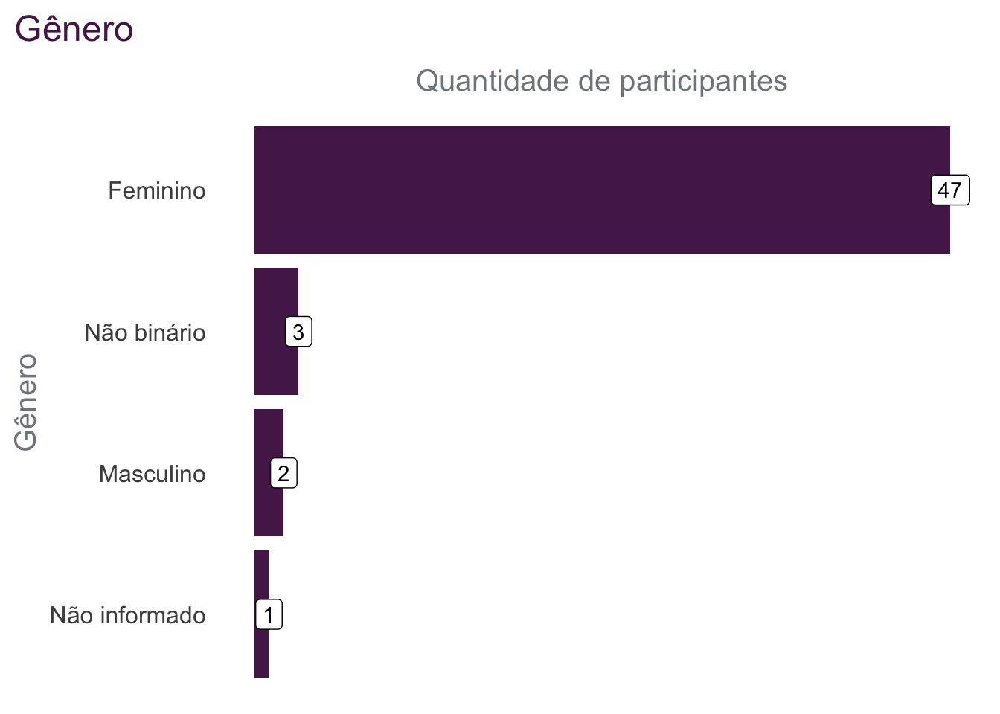

Olá, pessoal!
Recentemente, a R-Ladies São Paulo teve o prazer de organizar uma oficina de introdução ao R. O evento foi um marco importante, pois foi o primeiro evento presencial do grupo desde o início da pandemia de COVID-19.
O evento aconteceu no Insper, foi um sucesso e reuniu pessoas interessadas em aprender mais sobre a linguagem de programação R.

Conteúdo abordado
Os materiais utilizados no evento estão disponíveis online e gratuitamente, na página que criamos para a atividade.
A oficina começou com uma rápida apresentação do coordenador do Programa Avançado em Comunicação e Jornalismo do Insper, Pedro Burgos sobre o Insper.
Então, a Tatyane Paz fez uma apresentação sobre o comunidade R-Ladies (slides disponíveis aqui).
No restante da manhã, o conteúdo foi focado em R básico, apresentado por Bruna Garbes e Beatriz Milz (slides disponíveis aqui e aqui).
Após o almoço, o conteúdo foi focado nos pacotes tidyverse e dplyr! Apresentado por Ana Carolina Moreno e Jean Prado, o período da tarde foi muito dinâmico, apresentando conceitos utilizando bases de dados reais e recentes: quem são as pessoas eleitas como deputadas e que farão parte da Assembleia Legislativa do Estado de S. Paulo (ALESP) a partir de 2023 (slide disponível aqui, e material aqui).
O último conteúdo apresentado foi uma prática feita pela Beatriz Milz utilizando o pacote esquisse, uma forma interativa para começar a criar gráficos usando o pacote ggplot2.
Durante cada tópico apresentado na oficina, as outras pessoas apresentadoras ficavam espalhadas pela sala, atuando como monitoras tirando dúvidas das participantes e apoiando conforme a necessidade de cada uma. Também usamos um esqueminha de colar post it colorido no notebook para sinalizar o tipo de ajuda requisitada. Essa prática ajuda bastante e cria um bom dinamismo entre participantes e apresentadores1.
Diversidade
Para buscar ampliar a diversidade na participação do evento, nesta edição reservamos as vagas pensando em três grupos:
pessoas negras e indígenas (30 vagas);
mães (30 vagas);
mulheres e outras minorias de gênero (30 vagas).
Neste evento, 100 pessoas se inscreveram, e dessas, 53 participaram. A seguir, apresentamos alguns gráficos que mostram informações sobre questões de diversidade coletadas das pessoas participantes.
Ainda há muito trabalho a fazer para incluir mais mães nos eventos! Acreditamos que o Espaço GuGuDaDados, que falaremos a seguir, possa ajudar a atingir este público.
Além disso, ainda é importante trabalhar para garantir o aumento de pessoas pretas, pardas e indígenas na participação dos eventos.
Espaço GuGuDaDados
O GuGuDaDados é um espaço colaborativo e experimental que as RLadies São Paulo propõem com o objetivo de deixar as crianças entretidas e cuidadas enquanto as pessoas responsáveis podem se dedicar com tranquilidade à sua formação.
Essa foi a primeira vez que conseguimos organizar o espaço, e quatro crianças participaram, com idades entre 1 e 10 anos.
O Insper cedeu uma sala para o espaço GuGuDaDados, próxima à sala onde as apresentações estavam acontecendo.
As crianças se divertiram muito! Tivemos videogame num telão, o que tornou a experiência bastante imersiva. Para crianças menores havia um tatame com vários tipos de brinquedo, e adultos bem atentos olhando e brincando com elas. Na pausa para o lanche levamos cada criança para perto de seu adulto responsável, e depois todo mundo voltou às atividades. Entre um videogame e outro também jogamos jogos de tabuleiro, e acompanhamos as crianças maiores no famoso escorregador que está instalado no interior do prédio do Insper. Foi um barato!
Pandemia de COVID-19
Infelizmente o evento ocorreu em uma época onde os casos de COVID-19 estavam aumentando, e por isso a organização optou em não realizar coffee break colaborativo.
Embora ainda seja necessário tomar medidas de precaução, como o uso de máscara e o distanciamento social, foi emocionante ver o grupo reunido pessoalmente novamente. A R-Ladies São Paulo espera continuar a organizar eventos presenciais no futuro, a medida que a situação com a COVID-19 melhore.
Sorteios
Ao final do evento, sorteamos alguns itens entre as pessoas participantes:
Uma capa de notebook com o tecido de logos dos pacotes e comunidades de R, oferecido por Haydee Svab (a fundadora do capítulo da R-Ladies em São Paulo).
Dois livros: “Storytelling com Dados” (escrito pela Cole Nussbaumer Knaflic) e “O feminismo é para todo mundo” (escrito pela bell hooks), oferecidos pela Beatriz Milz (uma das co-organizadoras do capítulo).
Duas bolsas em cursos da Curso-R (oferecido pela Curso-R).
Os stickers não eram sorteados! Qualquer pessoa poderia passar na mesa e pegar üòÉ.
Apoiadores do evento
Agradecemos as organizações que apoiaram o evento. O Insper ofereceu o espaço (maravilhoso), e a Curso-R ofereceu as bolsas para sorteio. Saiba mais sobre as organizações apoiadoras a seguir!
Insper - Espaço
Insper é um instituto de ensino e pesquisa localizado em São Paulo, Brasil. É uma instituição sem fins lucrativos que oferece programas de graduação e pós-graduação em áreas como administração de empresas, economia, engenharia e ciências sociais. Além disso, o instituto também tem uma sólida oferta de cursos e atividades relacionadas à ciência de dados, como o Programa Avançado em Data Science e Decisão, e o Master em Jornalismo de Dados, Automação e Data Storytelling. O Insper também mantém um Centro de Ciência de Dados, que realiza pesquisas de ponta em ciência de dados e inteligência artificial.
Curso-R - Bolsas para sorteio
A Curso-R é uma empresa de cursos de programação em R e Python, e consultoria em ciência de dados. A missão é descomplicar a ciência de dados para a comunidade. A empresa disponibiliza diversos conteúdos gratuitos, como:
Um blog que contém posts sobre o tema desde 2017 (já são mais de 230 posts!).
Três livros abertos: Ciência de dados em R, Zen do R, e Programando em Shiny.
Um canal no Youtube, com diversos temas! Um interessante é o que fala sobre como juntar bases de dados usando Joins.
Além dos materiais gratuitos, a Curso-R também oferece cursos pagos. Existe um formulário de bolsas de diversidade de 100%, para pessoas que fazem parte de grupos menos representados na ciência de dados.
Equipe
Agradecemos o trabalho das diversas pessoas que atuaram voluntariamente na organização evento, como:
Encerramento e próximos eventos
Foi uma oportunidade incrível para aprender, trocar ideias e conhecer novas pessoas. Além disso, após o evento as pessoas participantes receberam certificados de participação.
Agradecemos todas as pessoas que participaram e esperamos vê-las em eventos futuros! Estamos planejando realizar um próximo evento focado em visualização de dados.
A R-Ladies São Paulo tem como objetivo promover a diversidade na comunidade de usuários de R e oferecer oportunidades de aprendizado e networking para pessoas que fazem parte de grupos de gêneros subrepresentados na linguagem R, interessadas em ciência e análise de dados. Se você quiser saber mais sobre o grupo, fique ligada em nossos próximos eventos e nos siga nas redes sociais.
Até a próxima!
Notas de rodapé
Usar post-its (sticky notes) para ajudar a organizar o tipo de ajuda necessária é uma recomendação feita no treinamento de instrutores da The Carpentries.↩︎